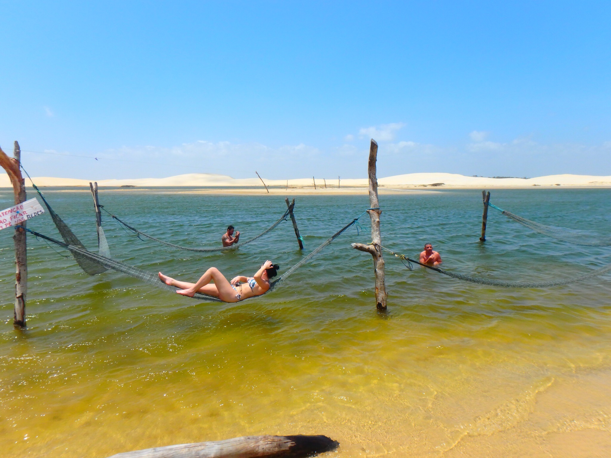
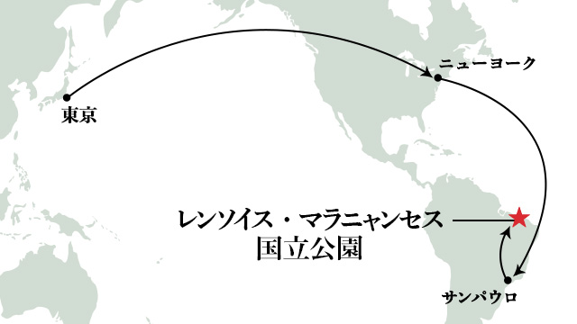
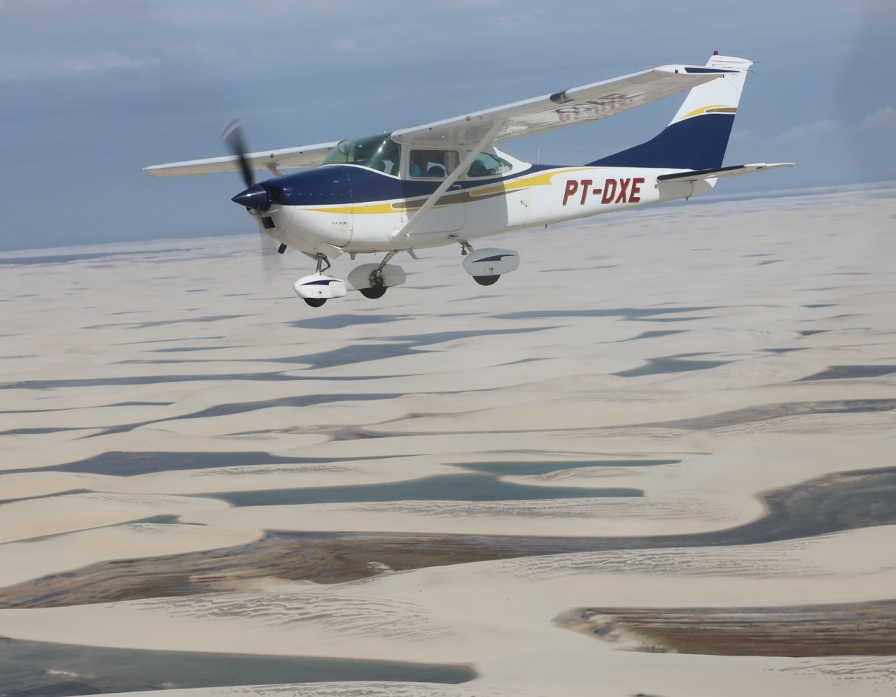

レンソイスマラニャンセスとは
ブラジルの北東部マラニャン州にある広大な砂丘。衛生写真からも見られる真っ白な大砂丘が広がる。雨季の間にだけ砂丘の至るところに無数のエメラルドグリーンの湖が現れるのが特徴。まるでシーツのように白い砂丘が1550km2（東京都の約7割、大阪府の約8割の広さ）に渡って広がっている。
解明されてない謎
湖が出現すると魚も現れるが、乾季の間はどのように過ごしているかははっきりとしていない。有力な説として、魚卵が鳥類に付着して湖に運ばれ孵化する説と、湖に住む魚が耐久卵を産み、地下水脈によるわずかな水分で乾季を過ごし、雨季に湖が出現した時に孵化するという説がある。
行き方
日本からでは気が遠くなる程の大変な道のりだが行く価値はある。一度ブラジルの主要都市であるサンパウロ等を経由しゲートウェイとなる都市サンルイスへ。そして観光の拠点となるバヘリーニャスと言う小さな町へ5時間程バスに乗って向かう。そこからレンソイスマラニャンセス国立公園までは大型四輪駆動車で約1時間。インフラが整っていない道が多い為道のりは険しくかなり揺れるので体力を使う。
バギー体験
私が実際に体験したバギーで砂漠を駆け巡るツアーは今でも思い出すとアドレナリンが出てしまうぐらい最高な体験だった。砂漠に住む野生動物だったり、突如現る果てしない数の風力発電や砂漠のオアシスと呼ばれる場所で休憩したり海沿いをとにかく駆け抜けたり、障害物がないからスピードを気にする必要もなく日本ではなかなか出来ない貴重な体験をしたと思う。

遊覧飛行
他にも色んな方法でレンソイスを楽しむ事ができるが、中でも人気なのがセスナ機に乗り上から見下ろす遊覧飛行。かなり揺れるので酔い止めは必須だ。
